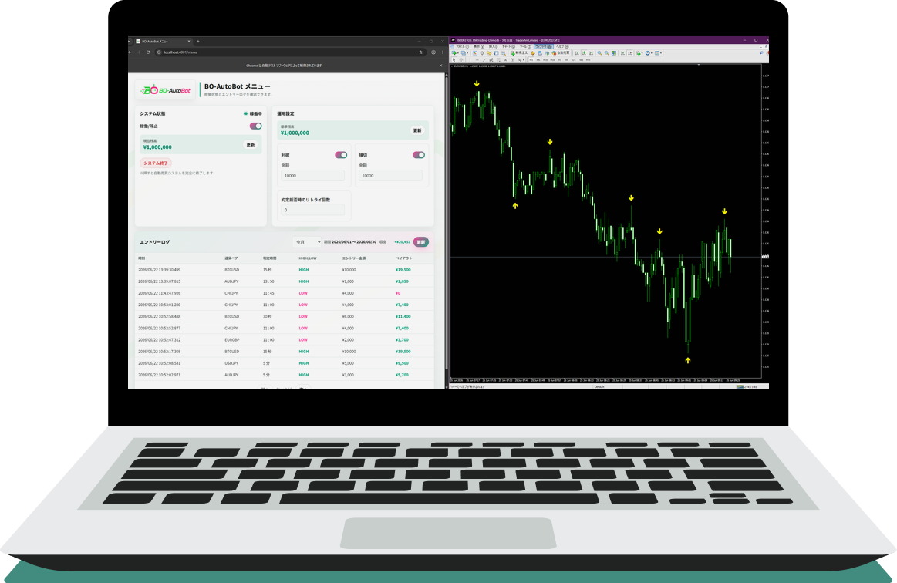
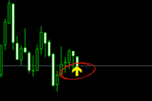
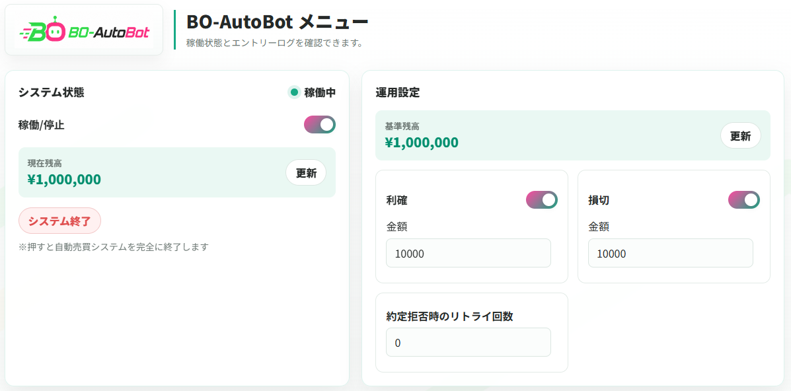
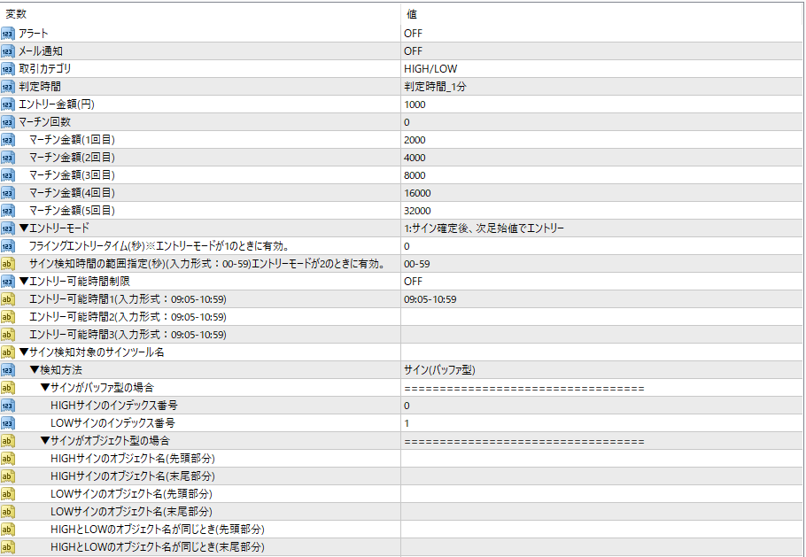
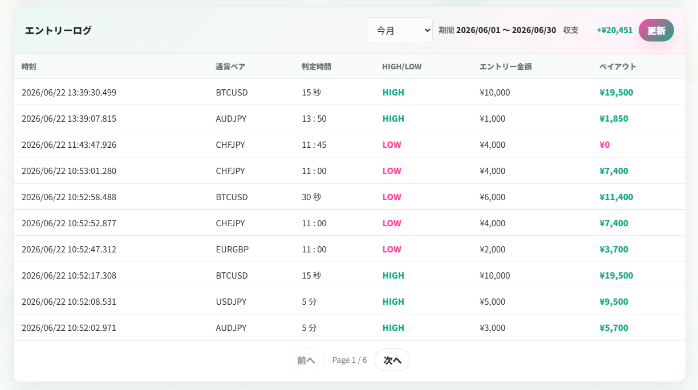
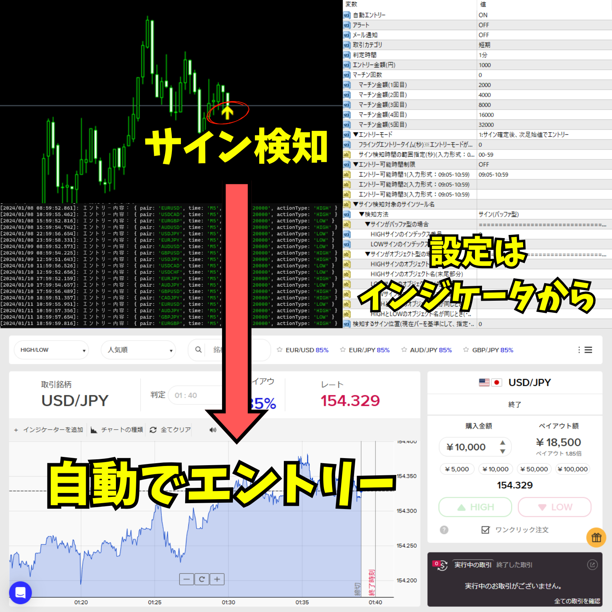

サインを見逃す
チャートを常に見続けられず、エントリータイミングを逃してしまう。
MT4チャートに表示されるサインを検知し、バイナリーオプションのエントリー操作を自動化するシステムです。
インフォトップの決済ページへ移動します。

PROBLEM
サインツールを使っていても、サイン確認から取引サイトでの操作まで手作業が残ると、運用の負担は大きくなります。
チャートを常に見続けられず、エントリータイミングを逃してしまう。
サイン発生後に取引サイトへ移動している間に、狙ったタイミングからずれる。
サインツールごとにエントリー条件や金額を管理したい。
複数通貨ペアのサインをまとめて監視し、順番に処理したい。
FEATURES
お手元のサインツールから発生するサインを検知し、設定に合わせてエントリー処理を自動化します。

MT4チャート上に表示される矢印などのサインを検知します。サインの型が不明な場合は、公式LINEにお問い合わせ下さい。
エントリー金額、マーチン設定、停止時間、エントリーモードなど、運用に必要な項目を設定できます。
取引サイトのアップデートの影響をできるだけ少なくするための仕組みを導入しています。
OPERATION SCREEN
実際の設定メニューとエントリーログの画面例です。設定状態や処理履歴を確認しながら運用できます。

拡大表示
拡大表示
拡大表示PRODUCT DETAILS

MT4チャートに表示されるサイン(矢印等)を検知し、自動エントリーを行います。
※アラート検知には対応していません。
| 対応業者 | 公式LINEにお問い合わせ下さい |
|---|---|
| 対応オプション | HIGH/LOW / スプレッド |
| 対応取引時間 | あらゆる取引時間に対応 |
| 対応通貨ペア | Forex 通貨ペア/仮想通貨 |
| 検知可能なサイン | バッファ型/オブジェクト型 |
| その他の機能 | エントリー金額変更 / アラート通知 / マーチン（5回まで） / マーチン金額変更 / エントリー停止時間の設定 / 2種類のエントリーモード選択 / ローソク足確定数秒前にエントリー / 利確・損切設定 / 約定拒否発生時のリトライ / 複数通貨ペア同時エントリー |
※複数通貨ペアで同時にサインを検知した場合は、1通貨ペアずつ順番にエントリーします。
DELIVERY FLOW
ご購入後、案内書(PDF)に従ってフォーム送信してください。公式LINEは購入後のサポート用です（登録は任意です）。
インフォトップの決済ページで購入手続きを行います。
マイページから案内書をダウンロードし、案内に従ってフォームを送信します。
フォーム送信完了後、自動返信メールでシステム一式のダウンロードリンクをお送りします。
FAQ
導入前によく確認される内容をまとめています。
サインの型や表示方式によって確認が必要です。公式LINEにお問い合わせ下さい。
対応しています。サインツールごとに設定が可能です。
ご購入後、3ヶ月のサポートがございます。公式LINEからお問い合わせ下さい。
可能です。ただし、稼働に必要なアプリケーションや通信環境を停止しないようご注意ください。
利益や成果を保証するものではありません。投資判断はご自身の責任で行い、余裕資金の範囲内でご利用ください。
PRICE
税込30,000円
サイン検知用インジケーター、自動エントリーソフト、設定マニュアル、3ヶ月サポートを含みます。
インフォトップで購入する